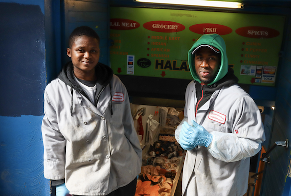

Established in 1820, Haymarket is the oldest open air market in the country, providing fresh produce
to the local Boston community in North End. The vendors embody America's diversity, with over 20 nationalities
represented across 40 independent vendors. This film explores the ways multiculturalism, the American Dream, food assistance, regulation, and more
intersect in the market. The story of Haymarket is best told by the vendors and the customers.
Special thanks to Otto Gallotto, Haymarket Pushcart Association President, for his support during filming.
